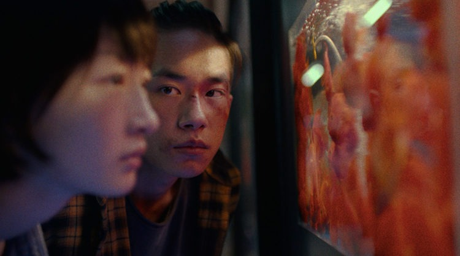

☆Gênero: Crime/ Romance/ Melodrama
☆lançamento: 25/10/2019
☆diretor(a): Kwok cheung Tsang
☆Onde assistir? prime Video
☆classificação indicativa: +14
☆Duração: 2h 15mn
avaliação:★★★★☆(3,9)
Sinopse
Uma adolescente que sofre bullying na escola forma uma amizade improvável com um jovem misterioso que a protege de seus agressores, enquanto ela lida com as pressões de seus exames finais.